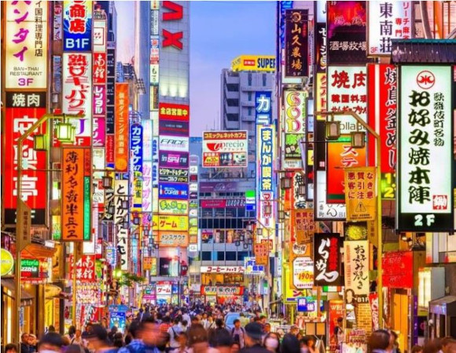
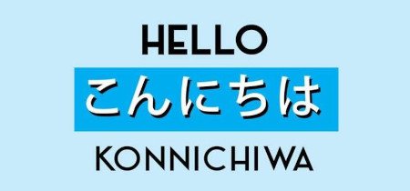
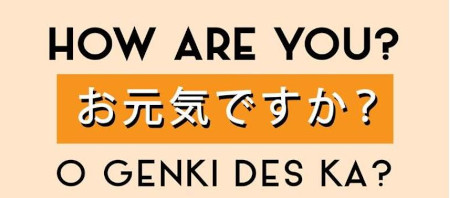
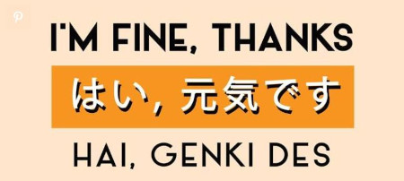
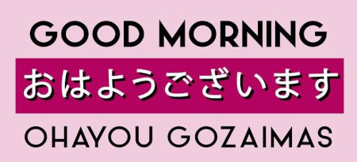
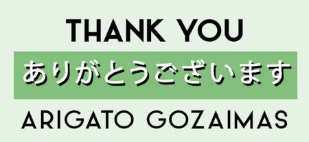
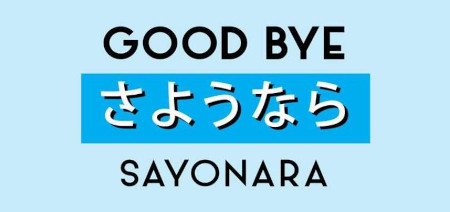
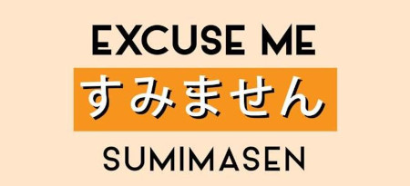
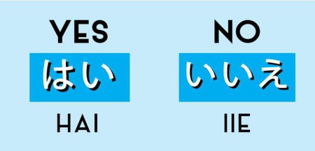
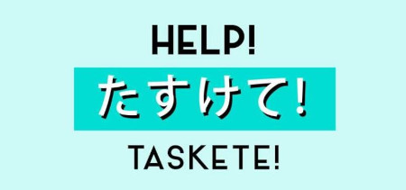

Let's learn some useful Japanese!!
It is always nice if you can speak some local languages when you travel. Planning to travel to Japan? Here are most useful 10 Japanese phrases.
Japanese is a very syllable-based, vowel-sounding language that's easy for English speakers to pronounce without many exceptions. Let's get started.
10 useful Japanese phrases when travel
"Konnichiwa こんにちは" is the most commonly used when meeting and greeting people. Usually, we use this phrase to greet people at the afternoon (12-6pm).
You may be asked this by service people or friendly locals you encounter. Genki 元気 means “lively; full of spirit; energetic; vigorous; vital; spirited” in Japanese. So, if you are asked by this, the people are more focusing on your enegy level, and are you feeling well?
A polite way to answer "how are you?" "O お" is a honorific in Japanese. When you answer a question, you usually omit the "O お".
"Ohayou gozaimasu おはようございます" means Good morning. You will be greeted with this phrase in the morning by staff at your hotel or in stores. "gozaimasu" is a very polite expression, which usually used in formal settings or to your superior.

"konbanwa こんばんは" is useful when you greet people at the evening, usually after 6pm. It is a good phrase to start a friendly small talk with your friends too.
You will hear and use this a lot in Japan. Again, "ございます gozaimasu" is a very polite expression. Since you are thanking someone, it is always nice to use polite expression to show your appreciation.
This is used as a final goodbye, when you know you may not see that person again. If you know you will see the person again, it is more common to use "ja mantaneじゃあまたね"
"すみません sumimasen" is used to get someone's attention. Sometimes it is used as an apology. For example, if you accidentally bump into someone, you can say "sumimasen".
Be careful when you say "iie" (ii-eh) for no. You need to draw out the "ii" sound otherwise the word "ie" means house. Be careful!
If you need help from locals, this is the word to use. It is particularly useful when there is an emergency and you need assistance.